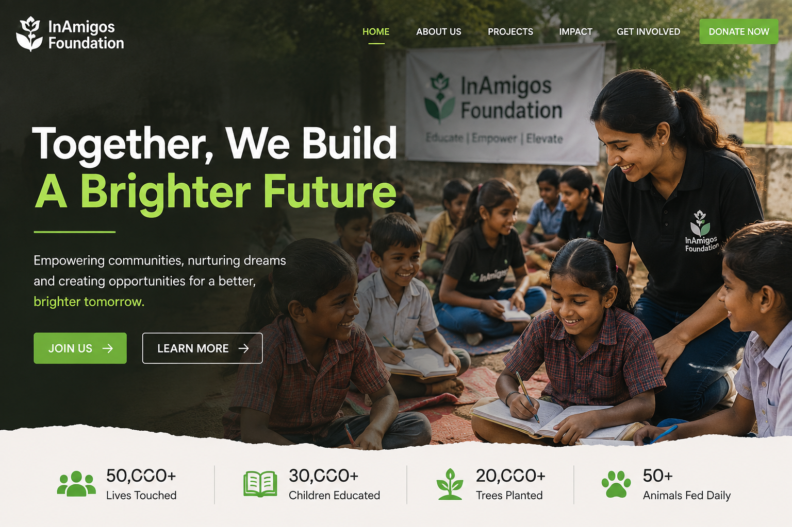
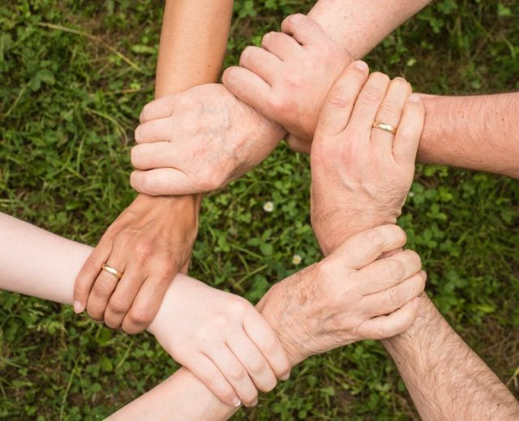
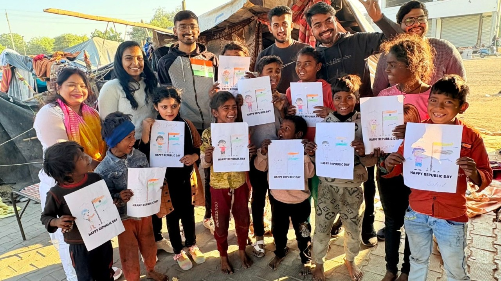
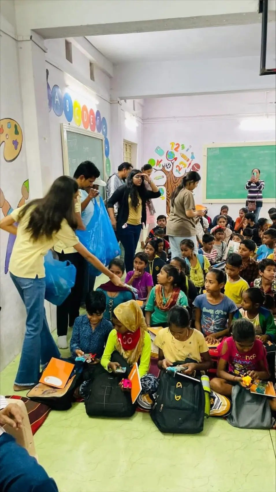
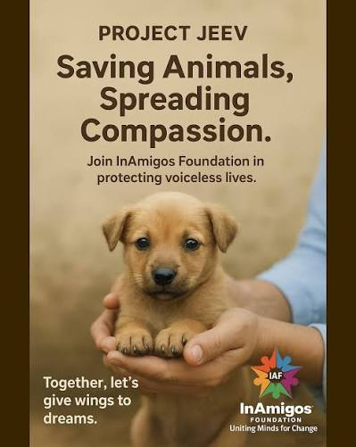
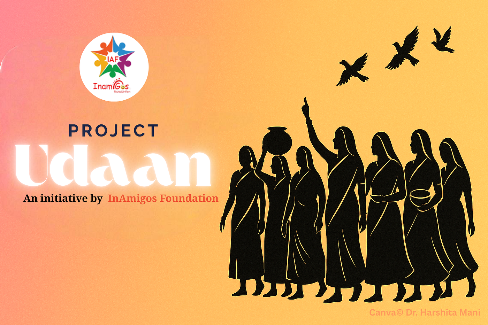
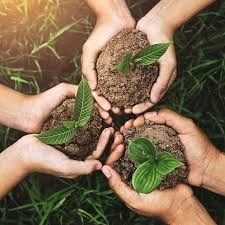

Together, We Can Make a Difference

Founded on September 23, 2020, by Mr. Govind Shukla, InAmigos Foundation is a Section 8 registered non-profit organization based in Chhattisgarh and working across India to create lasting social impact. the NGO operates nationwide to support underprivileged communities through welfare, education, environmental, and empowerment projects.Key Initiatives Project 1 Seva: Provides meals, clothing, and essential items to vulnerable and needy people. Project 2 Bachpanshala: Supports children with school education, basic digital literacy, and life skills.Project 3 Jeev: Focuses on animal welfare, including daily feeding and stray animal rescue.Project 4 Udaan: Promotes women's empowerment via skill training, self-help groups, and financial independence.Project 5 Prakriti: Drives environmental conservation through tree plantation drives and eco-friendly practices.Project 6 Vikas: Offers training and internship opportunities to youth to build work employability

Through collective action, dedicated volunteers, and meaningful initiatives, InAmigos Foundation continues to create positive change across communities.
Distributed to underprivileged communities through Project SEVA.
Supporting environmental conservation through Project PRAKRITI.
Helping young people develop skills and improve employability through Project VIKAS.
Supporting stray animals through the volunteer network of Project JEEV.
Our initiatives focus on education, community support, women empowerment, animal welfare, environmental sustainability and skill development.

Providing food and clothing to underprivileged communities and supporting their essential needs.
Support the Cause
Supporting underprivileged children through school education, digital literacy and life skills.
Support the Cause
Working for animal welfare through rescue, protection and feeding initiatives.
Support the Cause
Empowering women through skill development, financial independence and awareness.
Support the Cause
Promoting environmental conservation, sustainability and eco-friendly practices.
Support the CauseDeveloping skills and improving employability through internship and training opportunities.
Support the CauseInAmigos Foundation maintains recognized registrations and certifications that support transparency, accountability and quality standards.
Registered non-profit organization licensed by the Central Government.
Certified for transparency, accountability and donor tax benefits.
Registered to collaborate with corporate partners for CSR initiatives.
Registered and aligned with national development goals.
IAF certified with a commitment to high-quality standards.
Every contribution can make a difference. Join InAmigos Foundation through volunteering, partnerships or support and become a part of meaningful social change.